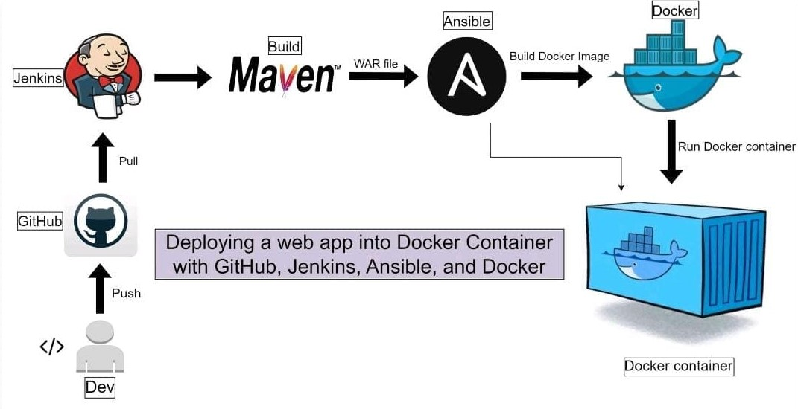

Home
>
Projects
Skill
Downloads
Manoj H D
DevOps | Java
Skilled in automating infrastructure provisioning and configuration management using tools like Ansible, Terraform, and Puppet.
Proficient in CI/CD pipeline tools like Jenkins, CI/CD, and CircleCI to accelerate software delivery.
Experienced in containerization technologies (Docker, Kubernetes) and cloud platforms (AWS) to build and deploy scalable applications.
Advanced CI/CD automation using Jenkins, and GitHub Actions
Skills
Languages :
Core Java
Scripting Language :
Shell/Bash
Operating System :
Windows and linux
Cloud Computing :
Amazon web services(AWS)
Version Control: :
Git and GitHub
CI/CD Tools: :
Jenkins
Containerization Tools :
Docker,Kubernetes
Configuration Management:
Ansible
Web Servers:
Nginx, Apache Tomcat
PROJECT

Download Links
Java :
https://download.oracle.com/java/17/archive/jdk-17.0.12_windows-x64_bin.exe
Maven :
https://dlcdn.apache.org/maven/maven-3/3.9.9/binaries/apache-maven-3.9.9-bin.zip
Jenkins :
https://www.jenkins.io/download/thank-you-downloading-windows-installer-stable
Git -32-bit :
https://github.com/git-for-windows/git/releases/download/v2.47.0.windows.2/Git-2.47.0.2-32-bit.exe
Git -64-bit :
https://github.com/git-for-windows/git/releases/download/v2.47.0.windows.2/Git-2.47.0.2-64-bit.exe